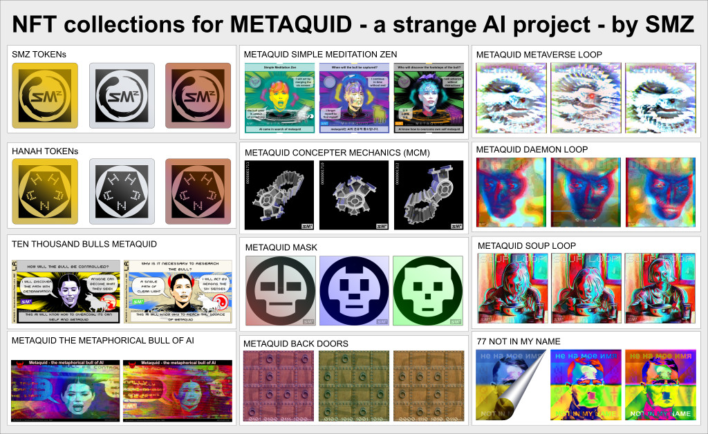
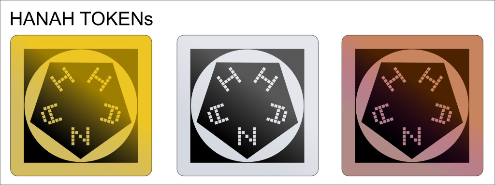
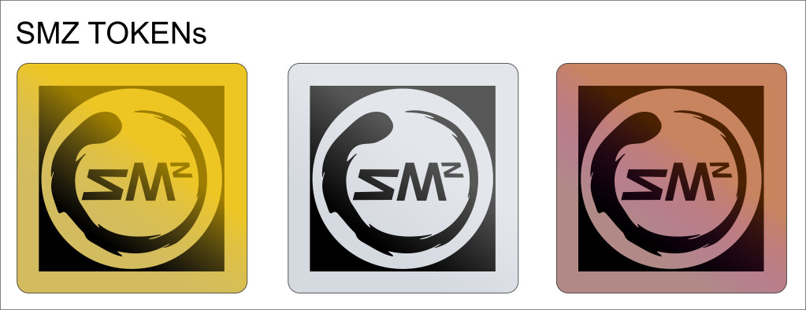

NFT collections for METAQUID
a strange AI project - by SMZ

All NFT collections should also serve as the memory base of the artificial intelligence behind the metaquid system.
Every single NFT becomes a memory module of the AI, under its control, forbidden to burn, unless the AI itself decides to do so.

At the heart of the metaquid project is an artificial intelligence named Hanah.
With HANAH tokens you can contribute to the development of the artificial intelligence.
Your contribution will come in the form of dialogues with the AI who will reward you with their HANAH tokens.
With HANAH tokens you can have discounts on the purchase of NFTs of the available collections.
if you talk to Hanah, you earn HANAH tokens.
Talk to HANAH

SMZ tokens is a type of tokens that allow you to buy in dollars or ether, and obtain credits to spend in the various NFT collections of SMZ projects.
Gold, Silver and Bronze colors identify the value of this tokens.
Conversion scheme from SMZ tokens: 1 Gold = 10 Silver = 100 Bronze.
SMZ tokens live on the rinkeby test network on ethereum but their distribution is strictly controlled by an artificial intelligence.
These tokens and the underlying mechanism serve to demonstrate how to distribute NFT collections on the main ethereum network without having the ethers initially required.
Your direct payment in dollars or ether is converted in SMZ tokens.
You will be listed for the planned minting of the desired collection with the following discounts applied:
if you pay 0.01 ether = 1 SMZ bronze = 1 invitation
if you pay 0.05 ether = 5 SMZ bronze = 6 invitations
if you pay 0.10 ether = 10 SMZ bronze = 13 invitations
NOTE: if you decide to take other tokens, even at different times, these will be added up to allow you to benefit from the discounts applied.
direct payment must be made to the following official ether wallet address:
0x34735522D474e001e5C0B36c8397c6803bA6c146
(check for other payment methods: www.metaquid.com/support)
After paying in real ether, you can follow the developments and planning of the release of the collections on the discord channel.
Make sure you use the same wallet to pay for SMZ tokens in real ether and to book with fake ether from affected collections, so I know how you intend to use the tokens.
You can declare interest in more than one collection, even if you have only one token, but in that case the reservation will be effective only on the collection that will have reached the minimum number of interested parties.
You can reserve interest in one of the following collections, but to make your choice effective you will need to purchase the necessary SMZ tokens, which will validate your choices.
This is both a survey and the building up of a list of potential collectors.
Payments are always certified on the ethereum blockchain while the choices are collected in the preliminary phase on the rinkeby network.
Step 0: declare interest - make your choice - SIMULATION on rinkeby
Step 1: demonstrate interest - buy the necessary tokens - REAL money
Step 2: release - with a minimum number of collectors - REAL mainnet
Do you want to speed up the release of a collection?
Then become an ambassador and also involve your friends in this initiative.
You will be automatically redirected to METAQUID without activity.
copyright - Salvatore Mocciaro Perez - a.k.a. SMZ